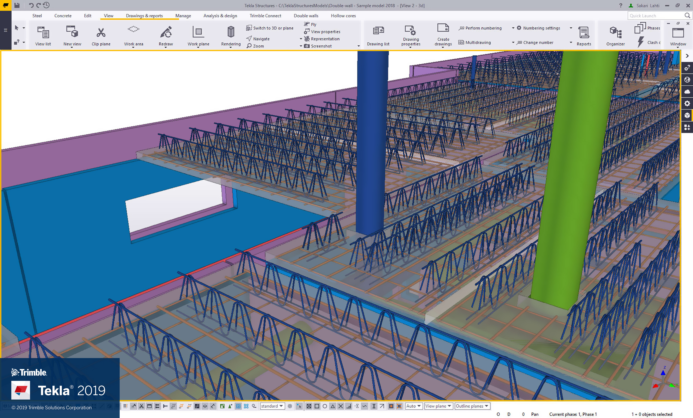
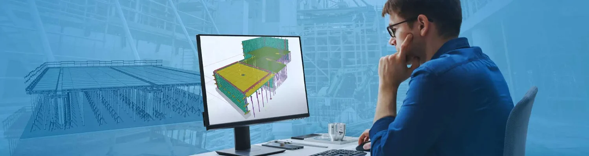
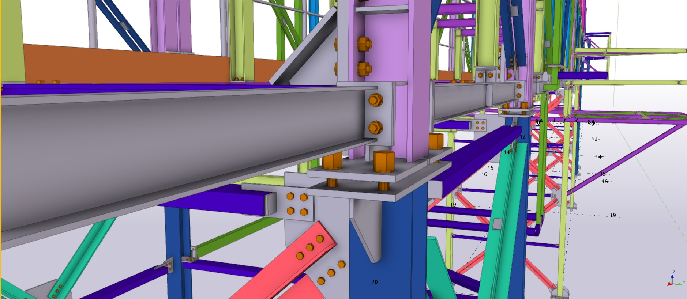
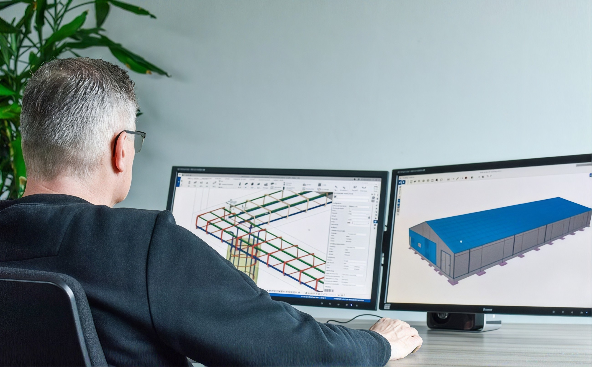
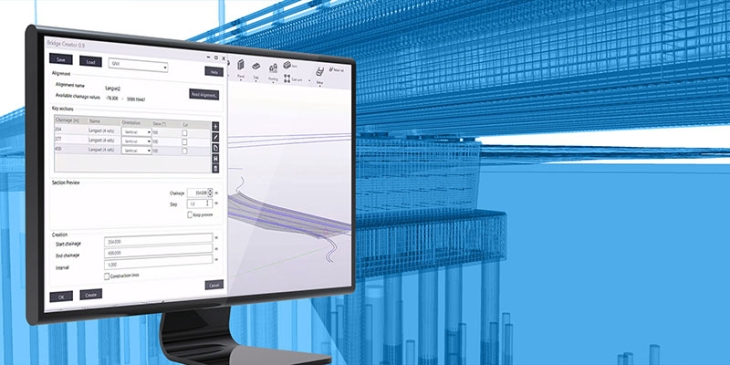

팀 구성원이 동일한
Tekla Structures 프로젝트에 참여하여
동일한 모델을 기반으로 작업 내용을
공유하고 협업할 수 있습니다.

“철골・콘크리트 구조물을 위한 3D 모델링과
설계 문서 작성을 시작하세요.”
Tekla Structures Graphite는 철골, 콘크리트 및
프리캐스트 구조물을 대상으로 설계 목적의 3D 모델을 작성하고,
모델 기반의 기본 도면과 문서를 생성할 수 있는 구독 플랜입니다.
기존 모델을 활용한 프로젝트 검토는 물론 직접 3D 모델을 작성하고,
설계 단계에 필요한 정보를 생성할 수 있어 구조설계 및
BIM 설계 업무에 활용할 수 있습니다.

Graphite 플랜의 주요 기능

| 기능 | Carbon | Graphite | Diamond |
|---|---|---|---|
| 모델링 | |||
| 모델 열기 및 보기 | |||
| 부품, 철골 어셈블리, 프리캐스트 콘크리트 부재, 콘크리트 타설 단위 모델링 | |||
| 철골 및 콘크리트 컴포넌트 생성 | |||
| 부재 고유 마크 생성 (넘버링) | ① | ||
| 지능형 일괄 편집 도구 | |||
| 계획도구 | |||
| 물류 계획, 작업 순서 설정, 일정 수립, 분류, 상태 정보 시각화 | |||
| 도면 및 보고서 | |||
| 보고서 작성 및 도면 인쇄 | |||
| 기본 도면, 철근 및 앵커 볼트 도면 작성 (평면도, 단면도, 설치도) | |||
| 철골 및 콘크리트 제작 도면 작성 (부품, 어셈블리, 콘크리트 부재) | |||
| 상호운용성 | |||
| 철골 CNC 및 MIS 시스템용 파일로 내보내기 | ② | ② | |
| 철근 제조 시스템용 파일로 내보내기 | |||
| 프리캐스트 콘크리트 ERP 및 MES 시스템용 파일로 내보내기 | |||
| 참조 모델 사용 (DWG, DFX, IFC 형식 등) | |||
| 해석 | |||
| 해석 모델 및 모델 하중 생성 | |||
| 해석 및 설계 인터페이스 | |||
| 기타 | |||
| 오픈 API 기능 | |||
| 미리 보기 기능 | ③ | ③ | ③ |

설계 단계에서 3D BIM 모델을
직접 작성해야 한다면
구조 설계사
BIM 설계 담당자
철골・콘크리트
구조 모델러
건설사 BIM
설계 담당자
프리캐스트 콘크리트
설계 담당자
철근 및 구조 설계 관련
도면 작성 담당자
Graphite 플랜은 3단순한 모델 검토를 넘어,
설계 목적의 3D 모델을 작성하고 설계 정보를 생성해야 하는
사용자에게 적합합니다.
하나의 구독으로 Tekla Structures와 협업 환경을
함께 활용할 수 있습니다.
팀 구성원이 동일한
Tekla Structures 프로젝트에 참여하여
동일한 모델을 기반으로 작업 내용을
공유하고 협업할 수 있습니다.
Tekla Structures 구독 플랜에는
Trimble Connect Business Premium이
포함되어 있어 BIM 프로젝트의 모델 및
관련 데이터를 클라우드 환경에서 공유하고
협업할 수 있습니다.

Named User 라이선스
한 명의 사용자를 위한
전용 라이선스
전 세계에서 사용할 수 있습니다.
하나의 라이선스 시트는 한 명의 사용자에게 할당됩니다.
온라인 라이선스 관리
Tekla Online Admin Tool을 통한 라이선스 및 사용자 관리
회사 계정의 관리자는 Tekla Online Admin Tool을 통해 사용자를 관리하고, 구매한 Tekla 구독을 사용자에게 할당할 수 있습니다.
또한 라이선스 사용 현황을 확인할 수 있습니다.
기존 모델을 열어보고
검토하고 싶습니다.
모델을 직접 작성하고
기본 설계 도면을 만들고 싶습니다.
상세 모델링과 제작 도면까지
작성하고 싶습니다.
설계용 3D 모델링이 필요하다면
Carbon에서 제공하는 모델 검토·계획·보고서 기능을 포함하면서,
직접 3D 모델을 작성하고 설계 도면을 생성할 수 있는 플랜입니다.